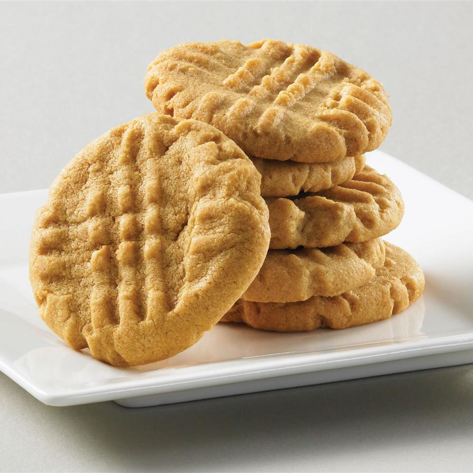

Peanut Butter Cookies

Description
Peanut butter cookies are a hit among the young and old alike.
Ingredients
- 1 cup butter, softened
- 1 cup white sugar
- 1 cup packed brown sugar
- 2 eggs
- 1 cup peanut butter
- 2 cups all-purpose flour
- 2 teaspoons baking soda
- 1/4 teaspoon salt
- 1 cup flaked coconut
Steps
- Preheat oven to 375 degrees F (190 degrees C)
- In a medium bowl, cream together the butter, white sugar, and brown sugar until light and fluffy. Beat in the eggs one at a time, then mix in the peanut butter. Combine the flour, baking soda, and salt. Blend in to form a soft dough. Mix in coconut. Drop dough onto ungreased cookie sheets.
- Bake for 23 to 15 minutes. Let cool.